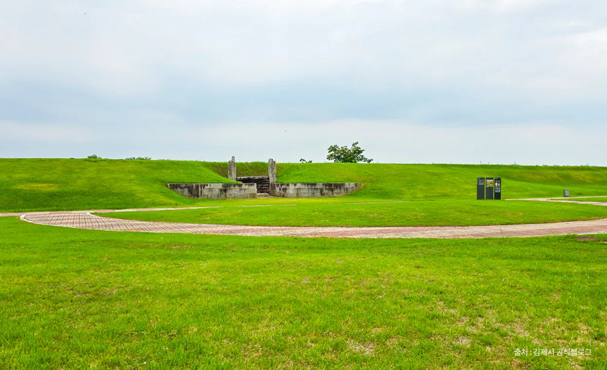
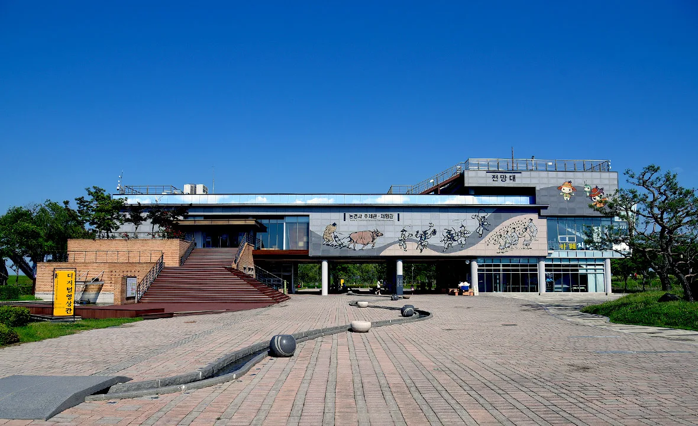
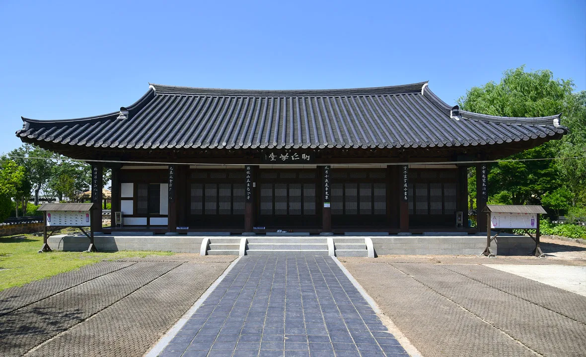

▲ 전북 김제 벽골제의 쌍룡 조형물. 지평선축제의 상징으로 벽골제 제방 위에 놓여 있다
한국에서 지평선을 볼 수 있는 곳은 많지 않습니다. 산이 많기 때문입니다.
김제는 예외입니다. 그리고 그 들녘 한복판, 1700년 가까이 된 저수지 제방 위에서 축제가 열립니다. 2026 김제지평선축제는 10월 1일 목요일부터 10월 5일 월요일까지입니다.
1. 추석을 놓쳤다면 여기가 다음 기회
날짜 배치가 좋습니다. 추석 연휴는 9월 27일 일요일에 끝나고, 축제는 나흘 뒤인 10월 1일에 시작합니다.
그리고 축제 마지막 사흘이 개천절 대체공휴일로 만들어지는 10월 3일부터 5일까지의 연휴와 그대로 겹칩니다. 연차를 쓰지 않고도 갈 수 있는 구조입니다.
| 날짜 | 요일 | 축제 | 휴일 |
|---|---|---|---|
| 10월 1일 | 목 | 개막 | 평일 |
| 10월 2일 | 금 | 운영 | 평일 |
| 10월 3일 | 토 | 운영 | 개천절 |
| 10월 4일 | 일 | 운영 | 주말 |
| 10월 5일 | 월 | 폐막 | 대체공휴일 |
📍 붐빔을 피하려면
연휴와 겹치는 10월 3일~5일에 방문객이 몰릴 가능성이 큽니다.
반대로 10월 1일 목요일과 2일 금요일은 평일입니다. 연차를 하루 낼 수 있다면 같은 축제를 훨씬 덜 붐비는 상태로 볼 수 있습니다.
2. 벽골제라는 무대
축제장이 특이합니다. 임시로 만든 행사장이 아니라 사적으로 지정된 유적 위에서 열립니다.
벽골제는 우리나라 최대의 고대 저수지로, 김제 부량면 일대에 약 3km에 이르는 제방이 남아 있습니다. 1963년 1월 21일 사적으로 지정됐습니다.

▲ 전북 김제 벽골제의 제방. 이 둑 위에서 축제가 열린다 ⓒ 전북특별자치도 투어전북
저수지라고 해서 지금 물이 가득한 것은 아닙니다. 남아 있는 것은 둑과 그 둑이 감쌌던 들입니다. 축제가 열리는 무대가 곧 유적이라는 점이 이 축제의 성격을 결정합니다.
3. 왜 여기서만 지평선이 보이나
지평선은 지형의 결과입니다. 시선을 가로막는 산이 없어야 하늘과 땅이 맞닿는 선이 보입니다.
김제 일대는 호남평야의 한가운데입니다. 벽골제가 이곳에 만들어진 이유도 같습니다. 넓은 농경지에 물을 대야 했기 때문입니다. 축제의 이름과 유적의 존재 이유가 같은 지형에서 나왔습니다.
📍 농경 유적과 축제의 연결
벽골제 관광지에는 농경문화박물관이 있습니다. 농경문화와 생활민속, 벽골제를 주제로 한 상설 전시가 운영됩니다.
축제가 단순한 계절 행사가 아니라 농경 문화를 매개로 한다는 점이 여기서 드러납니다. 들녘·저수지·박물관·축제가 하나의 맥락 위에 있습니다.

▲ 전북 김제 벽골제 농경문화박물관. 축제 기간이 아니어도 관람할 수 있다 ⓒ 전북특별자치도 투어전북
4. 축제장이 아니어도 남는 것
축제 닷새를 놓쳐도 벽골제 관광지는 남습니다. 상설 시설이 함께 있기 때문입니다.
| 시설 | 성격 |
|---|---|
| 벽골제 농경문화박물관 | 농경문화·생활민속·벽골제 주제 전시 |
| 아리랑문학관 | 소설 아리랑 관련 자료 |
| 벽천미술관 | 전시 공간 |
| 김제우도농악관 | 전통 농악 |
| 체험관·야외전시 | 어린이 대상 농경 주제 체험 |

▲ 전북 김제 벽골제 관광지 내 건물. 축제 기간 외에도 방문 동선이 만들어진다 ⓒ 전북특별자치도 투어전북
5. 차로 가는 사람의 계산
축제 기간의 주차는 평소와 다릅니다. 벽골제 관광지는 평상시 주차 여유가 있는 편이지만, 닷새 동안은 전제가 바뀝니다.
특히 10월 3일부터 5일까지는 연휴와 겹쳐 임시 주차장과 셔틀 운영이 함께 걸릴 가능성이 높습니다. 도착해서 판단하기보다 출발 전 축제 공식 안내에서 주차 계획을 확인하는 편이 낫습니다.
📍 평야 지대 운전에서 놓치기 쉬운 것
김제 들녘은 시야가 넓고 도로가 곧습니다. 속도가 자기도 모르게 붙습니다.
동시에 농기계 통행이 잦은 시기입니다. 10월 초는 수확기와 겹칩니다. 시야가 좋다고 안전한 도로는 아닙니다.
6. 출발 전 확인할 것
이 기사의 날짜 정보 가운데 축제 기간은 변동 가능성이 있습니다. 지역축제 일정은 기상과 지역 사정에 따라 조정되는 경우가 있습니다.
확인할 것은 세 가지입니다. 축제 공식 홈페이지의 최종 일정, 주차·셔틀 운영 방식, 그리고 유료 프로그램의 사전 예약 여부입니다. 특히 체험 프로그램은 현장 접수가 조기 마감되는 경우가 있습니다.

▲ 전북 김제 벽골제 정문. 축제 기간에는 이 일대 동선이 크게 달라진다 ⓒ 전북특별자치도 투어전북